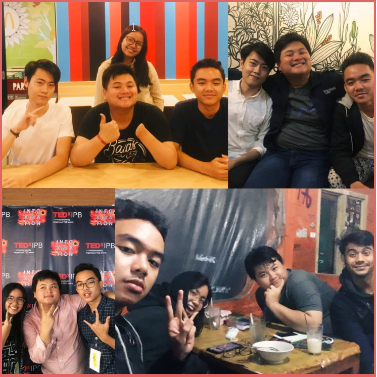
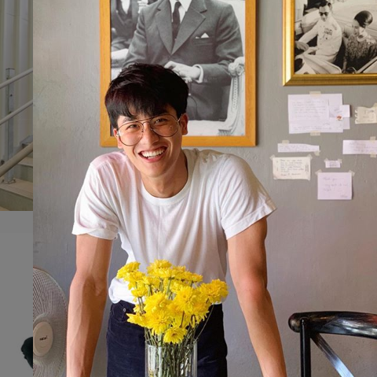

HAPPY BIRTHDAY UPI
Lutvi abdullah lahir pada tanggal 8 agustus 1999 di cianjur kali ya. Lahir dengan keaadan difabel yang awalnnya sangat membencinnya diri sendiri. Sudah jatuh ketiban meteor,eh ketemu dajjal. Itulah upi.
Hidup di keluarga yang tidak men-support akan semua usahannya, membuat upi sadar akan ia tak dianggap. Alhasil, upi terus berkerja keras bagai kuda pompang-pompang untuk meraih mimpinnya. Cukup teman-temannya yang dekat saja yang ia butuhkan karena semua butuh support.
“ Pokoknya gue ga mau orang-orang yang di dekat dan sayang sama gue itu ngerasain hal yang gue rasaian. Ancurnnya hidup gue. Bobrok-nnya hidup gue. Gue pen orang yang gua sayangin sukses semua ”.
Upi teh orangnnnya kalo udh nolong orang kebangetan. Tapi,kalo lagi ada masalah doi suka diem” gitu loh. Takut jadi toxic person ceunah. Isokay pii,semua orang butuh tempat bersandar sekuat apapun itu orangnnya. Cukup sama orang yang lu percaya aja.
Semua ini tentang give & take. Semakin banyak kita “membantu” ,semakin banyak pula “pertolongan” yang akan di dapatkan secara tidak terduga. Makasih Upi ! Keep bloomin.



“ We always love you, keep blooming ! Makasih telah hidup sampai sekarang. Kami masih menunggu mimpimu untuk dicapai. Ayok semangat ! “